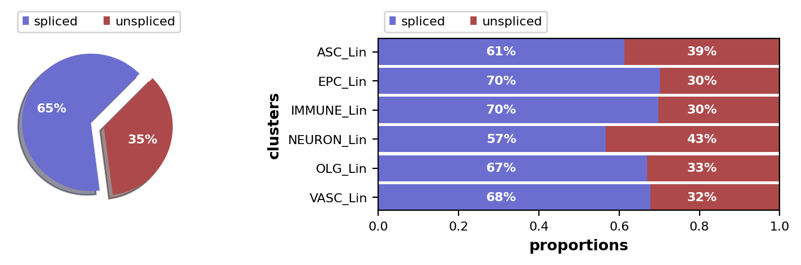

RNA velocity in adult mouse brain
Contents
RNA velocity in adult mouse brain#
RNA velocity analysis with the EM and steady-state models using data preprocessed with alevin_prepref_isoseparate_cdna_introns_decoy_gentrome.
Requires
adata_generation.ipynbvelocyto_var_names.csvfromvelocyto_vi.ipynb
Output
DATA_DIR/old_brain/velocities/alevin_sep_decoy_gtr_steady_state.pickleDATA_DIR/old_brain/velocities/alevin_sep_decoy_gtr_em.pickle
Library imports#
import sys
import pandas as pd
import scanpy as sc
import scvelo as scv
sys.path.insert(0, "../../../")
from paths import DATA_DIR
sc.logging.print_version_and_date()
Running Scanpy 1.9.1, on 2022-07-19 21:13.
General settings#
# set verbosity levels
sc.settings.verbosity = 2
scv.settings.verbosity = 3
scv.settings.set_figure_params('scvelo', dpi_save=400, dpi=80, transparent=True, fontsize=20, color_map='viridis')
scv.settings.plot_prefix = ""
Constants#
N_JOBS = 8
VELOCYTO_VAR_NAMES = pd.read_csv('velocyto_var_names.csv', index_col=0, header=None).index.tolist()
Data loading#
adata = sc.read(
DATA_DIR / 'old_brain' / "alevin_prepref_isoseparate_cdna_introns_decoy_gentrome.h5ad"
)
adata
AnnData object with n_obs × n_vars = 1823 × 54143
obs: 'cell_index', 'clusters_coarse', 'clusters', 'NAME', 'nGene', 'nUMI', 'animal_type', 'cell_type_age'
layers: 'spliced', 'unspliced'
scv.pl.proportions(adata)

Data pre-processing#
scv.pp.filter_and_normalize(adata, min_shared_counts=20, n_top_genes=2000, retain_genes=VELOCYTO_VAR_NAMES)
scv.pp.moments(adata, n_pcs=30, n_neighbors=30)
Filtered out 45322 genes that are detected 20 counts (shared).
WARNING: Did not normalize X as it looks processed already. To enforce normalization, set `enforce=True`.
WARNING: Did not normalize spliced as it looks processed already. To enforce normalization, set `enforce=True`.
WARNING: Did not normalize unspliced as it looks processed already. To enforce normalization, set `enforce=True`.
Extracted 2433 highly variable genes.
Logarithmized X.
computing PCA
on highly variable genes
with n_comps=30
finished (0:00:02)
computing neighbors
finished (0:00:19) --> added
'distances' and 'connectivities', weighted adjacency matrices (adata.obsp)
computing moments based on connectivities
finished (0:00:01) --> added
'Ms' and 'Mu', moments of un/spliced abundances (adata.layers)
Model fitting#
Steady state#
scv.tl.velocity(adata, mode="steady_state")
adata = adata[:, VELOCYTO_VAR_NAMES].copy()
computing velocities
finished (0:00:00) --> added
'velocity', velocity vectors for each individual cell (adata.layers)
pd.DataFrame(
adata.layers['velocity'],
index=adata.obs_names,
columns=adata.var_names
).to_pickle(
DATA_DIR / 'old_brain' / 'velocities' / 'alevin_sep_decoy_gtr_steady_state.pickle'
)
EM#
scv.tl.recover_dynamics(adata, var_names=VELOCYTO_VAR_NAMES, n_jobs=N_JOBS)
scv.tl.velocity(adata, mode='dynamical')
recovering dynamics (using 8/64 cores)
finished (0:03:35) --> added
'fit_pars', fitted parameters for splicing dynamics (adata.var)
computing velocities
finished (0:00:02) --> added
'velocity', velocity vectors for each individual cell (adata.layers)
pd.DataFrame(
adata[:, ~adata.var['fit_alpha'].isnull()].layers['velocity'],
index=adata.obs_names,
columns=adata.var_names[~adata.var['fit_alpha'].isnull()]
).to_pickle(
DATA_DIR / 'old_brain' / 'velocities' / 'alevin_sep_decoy_gtr_em.pickle'
)
WARNING: Tubb3 not recoverable due to insufficient samples.
WARNING: Chst15 not recoverable due to insufficient samples.